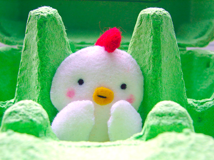

¿Por qué los pequeños detalles?
Cuando ponemos todo el cariño en cualquier campo de nuestra vida estamos fijándonos en todos los pequeños detallitos porque nos importan los resultados.
A mi me encanta mi trabajo, así que cuando estoy delante de un trabajo de front me encanta perderme rematando patrones de interacción, procurando que todo degrade bien, pensando qué pasaría si entramos sin js, sin css...
Evidentemente perderte en los detalles requiere tiempo, así que lo mejor que podemos hacer es poner mucho cuidado a la hora de elaborar nuestro código para cuando nos encontremos con una funcionalidad similar poder recurrir a todo ese trabajo ya realizado.